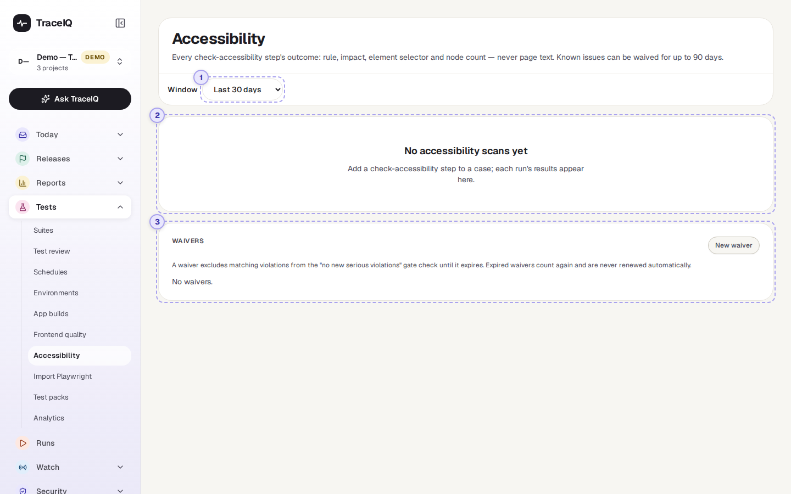
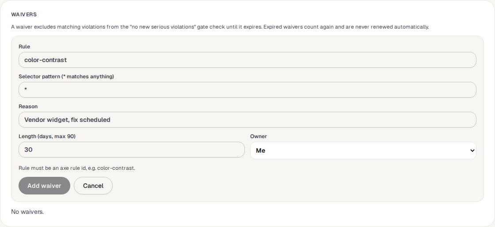

Accessibility
A register of every accessibility problem your tests have found: how serious it is, where on the page, whether it is new, and how the numbers move from day to day. Known problems you can't fix yet can be set aside for a limited time with a waiver.
What it is for
An accessibility problem is something that makes a page hard or impossible to use for some people, for example text with too little contrast, a button a screen reader can't name, or a form field without a label. Tests find them with a check-accessibility step, which runs the widely used axe checker on the page. This page answers "Are we getting better or worse, and what is new?"
Testers
See what the latest runs found, and which problems appeared since the run before.
Developers
Get the rule, the element and a link to the explanation of how to fix it.
Leads
Watch the trend, and keep accepted problems on a deadline instead of ignoring them.
Where to find it: in the sidebar, open Tests → Accessibility. It shows the project selected at the top of the sidebar.
A tour of the screen
The demo has no stored accessibility scans yet, so the screenshot shows the page before its first result. The numbers match the sections below; the parts that appear once there are results are described after them.

Window
How far back to look: the last 7, 30 (shown first), 90 or 180 days of runs.
The results
Until a test with a check-accessibility step has run in the window, this place says "No accessibility scans yet". Once there are scans, it fills with four parts:
- Five number tiles: how many critical, serious, moderate and minor problems are open in the latest scans, and how many are waived (with how many are new since the run before).
- Violations by impact: a bar per day, stacked by how serious the problems were, with the number of runs and scans it is based on.
- New per day and Fixed per day: problems that appeared, and problems that went away, compared with the previous run of the same test.
- Open violations: a table of the problems in the latest scan of each test (see below).
| Impact | What it means |
|---|---|
| critical | Blocks some people from using the page at all. |
| serious | Makes the page very hard to use for some people. |
| moderate | Gets in the way, but there is usually a way round it. |
| minor | A small annoyance. |
Each row of Open violations shows the impact, the rule (click it for the axe explanation of what is wrong and how to fix it), the target (the selector of the element, see Suites), the page and test, the number of matching elements ("nodes"), and its status: new if the previous scan of that test didn't have it, waived if a waiver covers it, otherwise a Waive button that opens the waiver form already filled in for that rule and element.
Waivers
A waiver says "we know about this problem and accept it until a set date". While it lasts, matching problems are shown as waived and don't count against the quality gate (see Good to know). New waiver opens the form:

| Field | What to fill in |
|---|---|
| Rule | The axe rule name, for example color-contrast. |
| Selector pattern | Which elements it covers. * matches anything, so * alone covers the rule everywhere and #footer * only inside the footer. |
| Reason | Required: why it is accepted for now, for example "Vendor widget, fix scheduled". |
| Length | 1 to 90 days (default 30). |
| Owner | Who is responsible for getting it fixed. You, unless you pick someone else. |
Each waiver in the list shows its rule and pattern, the reason, the owner, and how many days are left. Renew 30 days extends it, Remove ends it straight away.
Watch it in use
How to…
…start checking a page for accessibility
- Open a test that visits the page (Tests → Suites) and press Edit steps.
- After the step that opens the page, add a check-accessibility step, and save.
- Run the test. Its results appear on this page.
…set a known problem aside
- In Open violations, press Waive on its row. The rule and element are filled in.
- Write the reason, choose how many days, pick an owner, and press Add waiver.
- Before it runs out, either fix the problem or press Renew 30 days, if there is still a good reason.
Good to know
- Who can do what. Anyone with access to the project can see the register and the waivers. Adding, renewing and removing waivers needs the editor role. Every waiver change is recorded in the audit log.
- Waivers always run out. An expired waiver says "Expired — counts again", and its problems count again. TraceIQ never renews one by itself.
- No page text is stored. Only the rule, impact, element selector and count are kept, and selectors are trimmed so that values such as web addresses inside them are removed.
- "New" compares like with like: the same test, browser and device, in the previous run. The first scan in the window has nothing to compare with, so its problems aren't marked new here.
- The quality gate can block on new problems. On the Quality gate page, the rule "No new accessibility violations at serious or above" fails when a run finds a serious or critical problem that wasn't there in the previous comparable run and isn't waived. If a test has never been scanned before, everything it finds counts as new, so waive known problems first.
- Days are UTC days in the charts.
Related pages
Import Playwright
The next page in this guide: bring in tests written in Playwright code.
Quality gate
Switch on the rule that blocks a release on new serious accessibility problems.
Suites
Add the check-accessibility step to a test.
Frontend quality
Storybook tests that include an accessibility check per component.